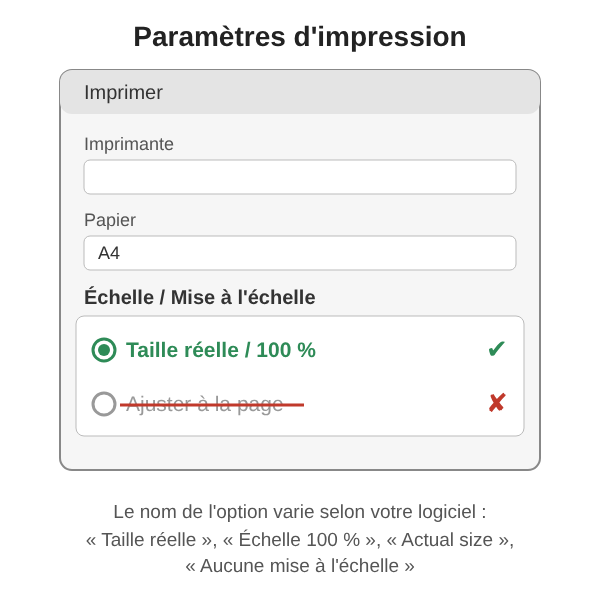
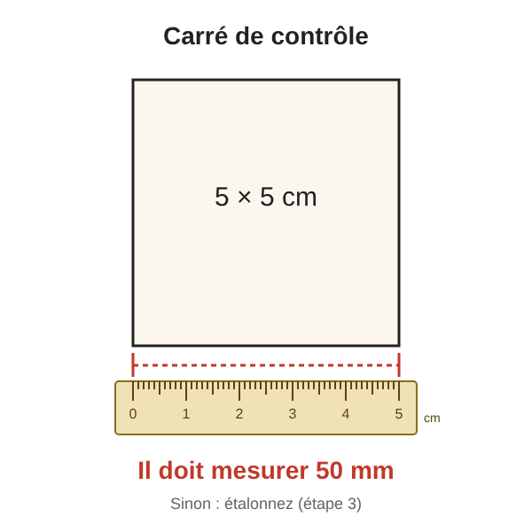
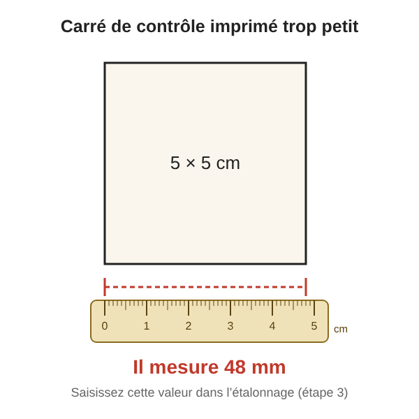
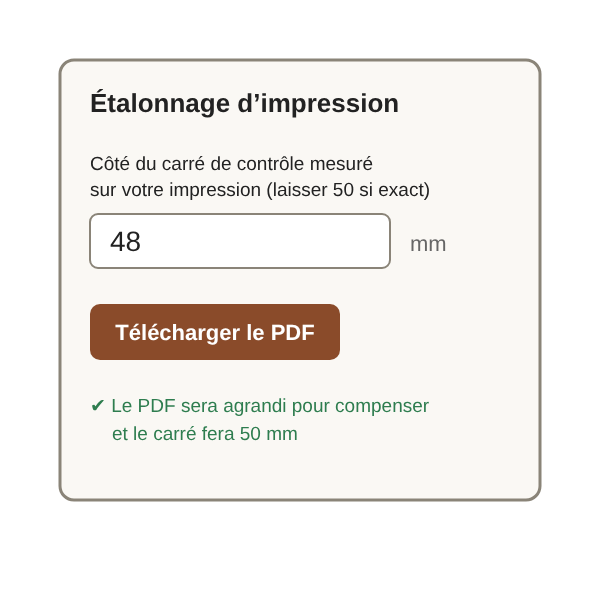

Imprimer à la bonne taille
1. Imprimer à taille réelle
Dans les paramètres d'impression de votre ordinateur, choisissez « Taille réelle » ou « Échelle 100 % ». Évitez « Ajuster à la page » : les pièces du patron ne seraient plus à l'échelle.

Où trouver ce réglage selon votre logiciel :
- Chrome ou Edge : Imprimer → Plus de paramètres → Échelle : « Personnalisée », 100.
- Firefox : Imprimer → Échelle : 100 %.
- Adobe Reader : Imprimer → Dimensionnement : « Taille réelle ».
- Aperçu (Mac) : Imprimer → Échelle : 100 %.
- Smartphone : le réglage n'existe pas toujours ; imprimez de préférence depuis un ordinateur.
Attention : ces intitulés peuvent varier selon les versions de vos logiciels.
2. Contrôler le carré de 5 cm
Chaque PDF contient un carré de contrôle de 5 × 5 cm. Mesurez-le avec une règle : il doit faire 50 mm.

3. Corriger si besoin
Si votre imprimante réduit malgré tout, saisissez la valeur que vous avez mesurée dans « Étalonnage d'impression », qui se trouve dans toutes les pages « Créer un patron » (et sur la page Cartouchière), puis téléchargez à nouveau le PDF : il sera redimensionné à la bonne dimension. Dans l'exemple, le carré mesure 48 mm.


4. Pièces plus grandes qu'une page A4
Les grandes pièces sont automatiquement réparties sur plusieurs pages A4, et la première page du PDF indique le nombre de pages. Découpez chaque page le long des traits de coupe des coins, superposez les zones de recouvrement de 1,5 cm de façon que les lignes de la pièce se prolongent exactement d'une page à l'autre (des indications « Recouvre … » signalent la page voisine), puis collez ou scotchez les pages ensemble.